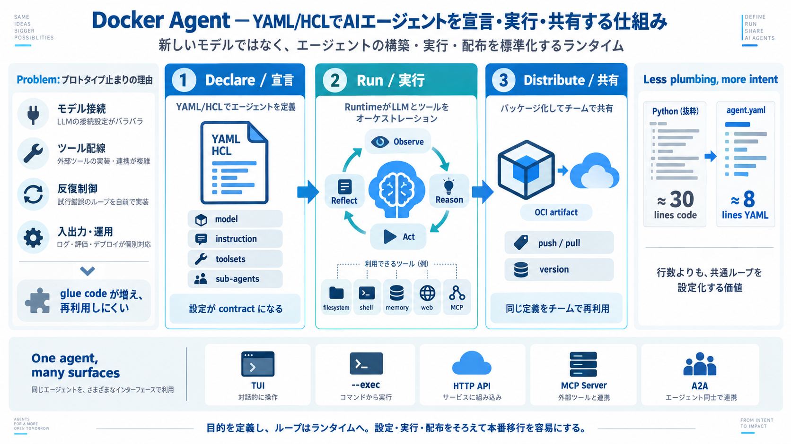

Declare
モデル、役割、ツール、サブエージェントをYAML/HCLで記述する。

Declare, run, and distribute
YAML/HCLでAIエージェントを宣言し、モデル・ツール・サブエージェントのループを実行し、OCIレジストリで共有するオープンソースの仕組み。
The container analogy
Dockerがアプリケーションの実行環境を再現可能にしたように、Docker Agentはエージェントを再利用可能な実行単位として扱います。
モデル、役割、ツール、サブエージェントをYAML/HCLで記述する。
LLMとツールの反復ループをランタイム側がオーケストレーションする。
エージェントをOCI形式でパッケージし、push / pullの流れに載せる。
Why agents stay prototypes
従来のエージェント開発では、本来の業務ロジックよりも「モデルと道具をつなぐコード」が増えがちです。
プロバイダー別API、ストリーミング、メッセージ形式を個別に処理。
スキーマ、呼び出し、結果変換、例外処理を毎回実装。
推論、実行、観測、再推論、停止条件を独自に組み立てる。
TUI、API、ログ、配布方法がプロジェクトごとに分断される。
The managed loop
Docker Agentがモデル応答、ツール呼び出し、結果反映、次の推論までを仲介します。
自然言語の依頼、CLI入力、APIリクエスト。
instructionと状態を保ち、モデル判断に応じてツールやサブエージェントへ処理を委譲。
選択したLLM、filesystem、shell、Web、memory、MCPツール。
Configuration as the interface
YAML/HCLには「何を達成するか」「どのモデルと道具を使うか」「誰へ委譲するか」を宣言します。
agents: root: model: provider/model instruction: | Repositoryを分析し、 必要な修正を提案する。 toolsets: - filesystem - shell sub_agents: - reviewer
構成イメージ。正確なキー名・対応形式・バージョンは利用時点の公式Configuration資料で確認が必要です。[01][02]
Less plumbing, more intent
提示例では、同じコーディング支援エージェントをコードで組む場合とYAMLで宣言する場合が比較されています。
モデル接続、ツール定義、反復ループ、ストリーミング処理を手書き。
目的、モデル、ツールセットを宣言し、共通処理をランタイムへ移す。
数値は提供資料中の提示例であり、すべてのユースケースにそのまま当てはまる工数保証ではありません。[01]
A standard toolbox
標準機能で始め、専門的な外部機能はMCPサーバーを「外付けの道具箱」として接続できます。
エージェントが頻繁に必要とするローカル操作や情報取得。
外部SaaS、データソース、社内機能をMCP経由でツール化。
Agents as distributable artifacts
単にagent.yamlを渡すのではなく、OCIレジストリを使ってエージェントを識別・配布・取得できる設計です。
モデル参照、instruction、toolsets、サブエージェントを宣言。
エージェントをOCI互換レジストリへ登録し、版を共有。
チームや環境が同じ参照から取得し、共通の導線で実行。
配布対象はエージェントの実行定義であり、利用するLLMそのものを新たに提供するという意味ではありません。[01][02]
One agent, many surfaces
同じエージェント定義を、対話、バッチ、サービス、エージェント間連携へ展開できます。
TUI
プロンプトやツール動作を端末上で確認しながら改善。
--exec
ログ解析、定型処理、パイプやスクリプトへの組み込み。
HTTP API
HTTPやOpenAI互換の接続面からアプリケーションが利用。
MCP Server
エージェント自身をMCP経由の機能として接続。
A2A
Agent-to-Agentプロトコルを通じた役割分担を想定。
Delegation by configuration
ルートエージェントが目的を分解し、専門化したサブエージェントへ処理を委譲できます。
依頼を理解し、必要な役割を選び、最終結果を統合する。
情報収集と根拠整理に集中する。
ファイル操作や実装タスクを担当する。
結果を検証し、誤りや不足を指摘する。
What it is — and is not
Docker Agentの価値を正しく評価するには、LLM、アプリケーションコード、配布物を分けて考える必要があります。
独自LLMを提供し、そのモデルだけを使わせる仕組みではない。
OpenAI、Anthropic、Gemini、AWS Bedrock、localなどを利用者が選ぶ。
反復ループや基本的なツール配線を毎回実装する前提ではない。
目的と構成を設定へ移し、共通の実行処理をランタイムが担う。
環境差異や版の所在を人手だけで管理する運用に留まらない。
既存のレジストリ運用へエージェント配布を接続する。
From idea to operation
Docker Agentは、プロトタイプと運用を別々の実装にせず、同じ定義を段階的に昇格させる流れに向きます。
TUIで目的、instruction、出力傾向を探索。
モデル、toolsets、サブエージェントを固定。
代表タスク、権限、失敗時挙動を検証。
版を付け、OCIレジストリへpush。
--execやAPIから取得・実行・監視。
Preserve the agent, change the surface
対話で確かめたエージェントを、その定義を保ったままバッチやAPI運用へ移しやすい点が実務上の利点です。
出力を読み、instructionやツール構成を素早く修正する段階。
同じエージェント定義をCLI、パイプ、HTTPサービスへ接続する段階。
Capability creates exposure
エージェントがfilesystem、shell、network、credentialsへ触れられるほど、誤操作や攻撃時の影響範囲は広がります。
機密ファイルの読み取り、意図しない上書き、許可範囲外への書き込み。
任意コマンド、破壊的処理、依存パッケージ経由の実行リスク。
不正な外部通信、情報流出、信頼できない取得物の実行。
モデルAPIキー、クラウド資格情報、MCP接続先の秘密情報。
Evidence versus assumption
関連するDocker発信では多層サンドボックスが示されていますが、それがすべてのDocker Agent構成に自動適用されるとは限りません。
ファイルシステム操作をカーネル側の制約で限定する考え方。
利用可能なシステムコールを絞り、OSへの到達面を縮小。
実行環境の通信境界を分離し、到達可能なネットワークを限定。
外向き通信をポリシーで許可し、送信先を制御する考え方。
関連するDocker公式ブログおよび提供されたWeb検索メモに基づく補足。Docker Agentの全構成に対する保証としては扱っていません。[03]
Distribution is not governance
共有可能な実行単位になったからこそ、登録・承認・実行・監査の責任分界を明示する必要があります。
誰が登録し、更新し、廃止し、インシデントへ対応するか。
利用可能なモデル、toolsets、MCP接続先を誰が承認するか。
資格情報をどこから注入し、どの範囲で読めるようにするか。
モデル判断、ツール呼び出し、変更内容、利用者をどう記録するか。
トークン、実行時間、再試行回数、停止・復旧をどう制御するか。
Make failure explicit
提供資料だけでは、検証方法、ツール失敗時の挙動、再試行、監査粒度の標準仕様までは確定できません。
Decision-support scorecard
提供資料から見えるシグナルと、導入前に追加確認すべき項目を分けると、評価の偏りを防げます。
これは提供情報に基づく導入判断用の整理であり、製品の正式な評価点や保証ではありません。[01][03][05]
Expand only after evidence
本番権限を最初から与えず、再現性・可観測性・安全境界を確認しながら段階的に導入します。
読み取り中心、隔離データ、固定予算、本番資格情報なし。
同じ入力で挙動を再現でき、失敗パターンを把握できる。
限定業務、最小権限、監査ログ、高リスク操作は人間承認。
ツール失敗・費用・誤操作を検知し、安全に停止できる。
OCI昇格、承認済みtoolsets、ロールバック、運用責任者。
SLO、監査、コスト上限、インシデント対応が継続運用できる。
Where the design fits
Docker Agentは万能な置き換えではなく、標準化の価値が既存制約を上回る場面で効果を発揮します。
プロジェクトごとにLLMとツールのglue codeを再実装している。
Docker / OCIレジストリの認証・配布運用をすでに持っている。
TUIでの試作からCLI / API運用へ素早く移したい。
MCPやサブエージェントを共通構成として再利用したい。
既存の独自SDKやワークフローへ深く依存し、置換費用が大きい。
厳格な規制要件に対し、隔離・監査・データ所在をまだ説明できない。
shellやnetworkの最小権限化、ログ収集、秘密管理が未整備。
決定論的な処理が必須で、LLM判断を許容できない領域に使おうとしている。
A conditional go
設定中心の開発体験とOCI配布は検証価値が高い一方、本番採用は安全性・監査・費用・失敗時制御を通過条件にすべきです。
書き込み範囲と通信先を実機で制限できる。
モデル、ツール、MCP接続先を承認制にできる。
資格情報を設定ファイルへ埋め込まず注入できる。
利用者、判断、ツール実行、変更結果を追跡できる。
トークン、時間、反復回数、並列数へ上限を置ける。
停止、再試行、ロールバック、責任者呼び出しができる。
The operating principle
Docker Agentの強みは、AIエージェントを個別のコード作品から、再利用・検証・配布できる運用単位へ変えることです。
Sources and claim boundaries
本資料は提供テキストを圧縮・構造化したものであり、製品バージョン固有の仕様は公式資料と実機で再確認する必要があります。
YAML/HCL宣言、オーケストレーション、MCP、OCI、実行形態、実務上の未確認事項に関する本デッキの主資料。
提供テキストが参照する一次資料群。正確な構成キー、CLI、対応モデル、OCI操作、API仕様の確認先。
隔離、境界、多層防御に関する補足文脈。Docker Agentの全モードに対する既定保証としては引用していない。
ツールサーバー連携、artifact配布、エージェント間通信の用語と相互運用性を確認するための関連仕様。
以前の評価でセキュリティ詳細と運用ガバナンスが不足情報とされ、今回の補足で隔離技術への注目が増したという経緯。
資料の取得日、Docker Agentの具体的バージョン、既定のsandbox範囲、監査ログ粒度、秘密管理、費用制御、標準の失敗時挙動。
| Topic | | Replies | Views | Activity | --- --- | Please Generalize Docker Sandbox Docker Sandbox | 3 | 1003 | Mar…
Wasm components run in every one of these places with the same model. The same component, with the same list of granted …
Skip to content Sign In # Secure Agent Execution with NanoClaw and Docker Sandboxes Posted Mar 13, 2026 Eli Aleyner …
Monthly Price BetterClawFree, or $49/mo for 5 agents (BYOK) NemoClawFree software + $20–50+/mo server + API costs Pro…
A sandbox provides strict boundaries that limit what an agent can access, modify, or interact with. Effective sandboxing…